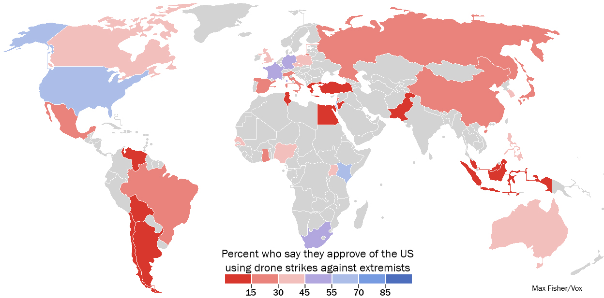
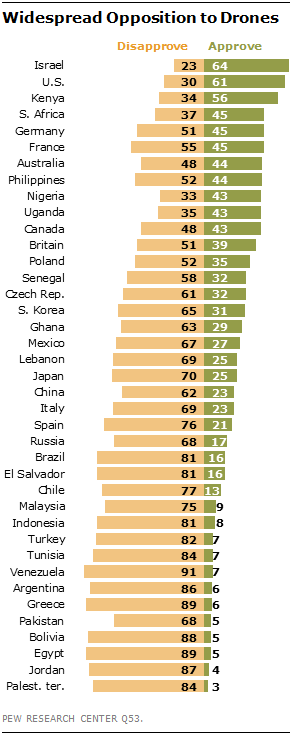

According to research, Brookings Institute finds countries tend to approve of their own drone strikes, but not other countries’ strikes. US citizens care about civilian casualties over military objective and French citizens care about military objective more than civilian casualties.
Below are two graphics that show opinions about drone strikes around the globe to help give some context while informing your own opinions on them.
Here is a map showing the global opinions on US Drone Strikes:
Here are the percentages of each countries' population's tht agree and disagree with drone strikes:
